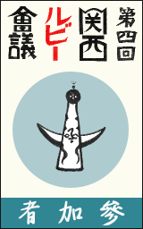
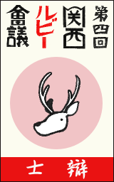
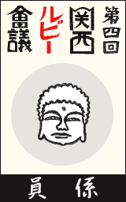

開催概要
- 会期:
- 2011年11月11日(金) 13:00〜18:00
- 2011年11月12日(土) 10:00〜18:00
- 会場: 大阪南港ATC ITM棟 10F デザインギャラリー・デザインショーケース (受付・展示会場)
- 参加費: 無料
- 事前登録: 不要
- 懇親会: 要事前登録 (準備でき次第お知らせします)
- 11月11日 関西オープンソース2011主催 懇親会
- 11月12日 Ruby関西主催 懇親会
- 主催: 関西Ruby会議04実行委員会
- 後援:
- 同時開催:
プログラム
11/11(金) days.first
[招待講演] XPによるアジャイル開発事例紹介とRailsによる15分クラウドリリースデモ
- 14:00-14:50
- 川端光義 / @agilekawabata (アジャイルウェア)
- 大規模金融システムのXPによるアジャイル開発事例の紹介と、15分で最新のRuby on Rails3.1のアプリを作り、Herokuクラウド上にリリースするデモをやります。
Rubyイメージソングお披露目会
- 16:00-16:50
- Ruby関西 おうちカフェ部 (Ruby関西／Minami.rb)
- 今年の春、株式会社クレオフーガさんの主催でRubyイメージソングコンテストが行われましたので２曲ここでご披露いたします。こじんまりな即席バンドですが、Rubyと音楽のコラボをお楽しみください。
[特別公演] クックパッドのものづくりについて
- 17:00-17:50
- 高田悟史/佐々木達也 (クックパッド株式会社)
- 技術を正しく活用し、本当に世の中の役にたつサービスを目指すクックパッド。月間UU1300万人を超える今、それを支えているのは30人ほどのエンジニアです。今回はその開発の裏側についてお話いたします。
11/12(土) days.last
[招待講演] Social Coding with JRuby
- 11:00-11:50
- 大場光一郎 (日本JRubyユーザー会 || 伊藤忠テクノソリューションズ株式会社)
- 4年ほどJRubyにゆるく関わっている話者が、Javaで動くRubyであるところのJRubyについて最新動向を紹介しながら、オープンソースプロジェクトJRubyへのたのしい関わり方についてお話します。
[招待講演] TDDとRubyKaigi運営技術
- 13:00-13:50
- 角谷信太郎 (一般社団法人日本Rubyの会 || (株)永和システムマネジメント)
- 話者の7年間にわたるテスト駆動開発の実践と、過去6回のRubyKaigiの運営に携わった経験を踏まえて、Rubyコミュニティの一員になるコツをお話しします。
Ruby 初級者向けレッスン 出張版
- 14:00-14:50
- 15:00-15:50
- ひがきまさる (Ruby関西)
- Rubyプログラミングを体験してみよう! トレーニングルームの PC を使ってRubyの基礎を学びます。
[招待講演] 私はいかにしてRubyによるオープンソース活動を楽しくやってきたか
- 16:00-16:50
- 河野十行 / @jugyo (mediba)
- 大学を中退してフリーターになった後、どのようにしてRubyプログラマーになったのか、いかにしてRubyによるオープンソース活動を楽しくやってきたか、ライブラリ作成のコツ、などについて話します。
[招待講演] Rubyから教わったものづくり
- 17:00-17:50
- 大和田純 / june29 (Ruby札幌)
- これまで、RubyやRubyのコミュニティ、そこに根付く文化から、たくさんのことを学んできました。その中から「ものづくり」に関することを、アプリケーション開発者という話者の立場からお話したいです。
おまけ
バッジ(さらに入荷予定です！)
| 一般参加者用 |
スピーカー用 |
スタッフ用 |
|

|

|

|